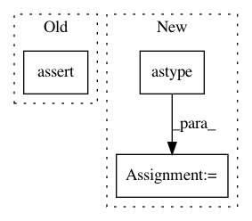

6d854ec8c54e0eb0a73635f41b0598f2d2231069,niftynet/engine/windows_aggregator_base.py,ImageWindowsAggregator,crop_batch,#Any#Any#Any#,71
Before Change
spatial_shape = window_shape[1:-1]
n_spatial = len(spatial_shape)
// import pdb; pdb.set_trace()
assert all([win_size > 2 * border_size
for (win_size, border_size)
in zip(spatial_shape, border[:n_spatial])]), \
"window sizes should be larger than inference border size * 2" \
" received: {}: {}".format(spatial_shape, border[:n_spatial])
if n_spatial == 1:
window = window[:,
border[0]:spatial_shape[0] - border[0],
np.newaxis, np.newaxis, ...]
After Change
return window, location
cropped_shape = np.max(location[:, 4:7] - location[:, 1:4], axis=0)
left = np.floor(
(spatial_shape - cropped_shape[:n_spatial])/2.0).astype(np.int)
if np.any(left < 0):
tf.logging.fatal(
"network output window can be "
"cropped by specifying the border parameter in config file, "
In pattern: SUPERPATTERN
Frequency: 3
Non-data size: 3
Instances
Project Name: NifTK/NiftyNet
Commit Name: 6d854ec8c54e0eb0a73635f41b0598f2d2231069
Time: 2017-09-01
Author: wenqi.li@ucl.ac.uk
File Name: niftynet/engine/windows_aggregator_base.py
Class Name: ImageWindowsAggregator
Method Name: crop_batch
Project Name: keras-team/keras
Commit Name: 9333179ad96fad2760221f2b3e2dec31f7c77f40
Time: 2016-12-19
Author: francois.chollet@gmail.com
File Name: keras/utils/test_utils.py
Class Name:
Method Name: layer_test
Project Name: dmlc/gluon-nlp
Commit Name: 2d57a39b24e0a7cbea31debb6117bd14e81c504d
Time: 2018-07-09
Author: xshiab@ust.hk
File Name: tests/unittest/test_batchify.py
Class Name:
Method Name: test_stack_batchify